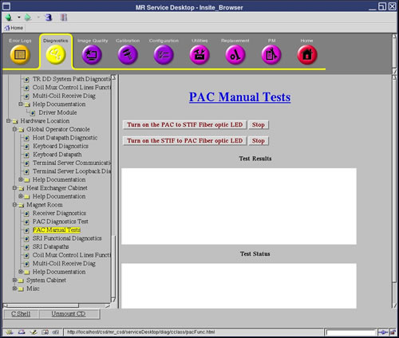
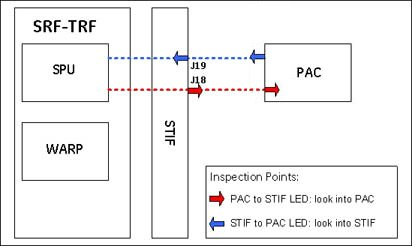
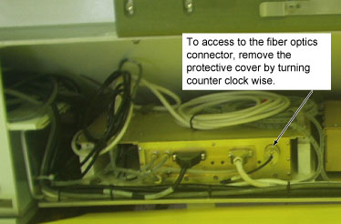
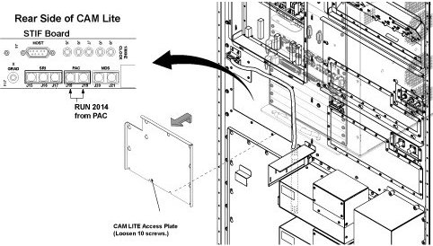

PAC Manual
1 Diagnostic Link
Diagnostics >> Hardware Location >> Magnet Room >> PAC Manual Tests
Figure 1. PAC Manual Tests Screen

2 Purpose
-
PAC to STIF LED: This test allows you to visually inspect the PAC serial transmitter and the fiber optic cables that connect to it.
-
STIF to PAC LED: This test allows you to visually inspect the STIF serial transmitter and the fiber optic cables that connect to it.
3 Components Tested
-
PAC to STIF LED: This test causes the SPU (at the TRF board) to command the PAC module to turn on the fiber optic driver LED that is normally used to send serial messages from the PAC module to the STIF board in the MGD chassis.
-
STIF to PAC LED: This test causes the MGD chassis to turn on the PAC serial port transmitter on the STIF board.
4 Requirements
After running this diagnostic, a TPS reset is required prior to scanning.
5 Block Diagram
Figure 2. Visual Inspection Points and View Directions

6 Test Sequence
6.1 PAC to STIF LED
-
Click Turn on the PAC to STIF Fiber Optic LED.
-
Disconnect the output fiber cable on the PAC to inspect the LED at the PAC Tx port. The LED at the fiber optic cable should be blinking.
Figure 3. PAC

-
Reconnect the PAC fiber cable to the PAC end.
-
Click Stop.
6.2 STIF to PAC LED
-
Disconnect the PAC output fiber cable on the STIF.
Figure 4. STIF Board

-
Click Turn on the STIF to PAC Fiber Optic LED.
-
Inspect the LED at the receive line of the fiber optic cable STIF J18 port. The LED at the fiber optic cable should be blinking.
-
Reconnect the fiber cable to the STIF.
-
Click Stop.
7 Expected Results
The Test Output field will indicate when the LED should be lit and other current status information.
 |
|